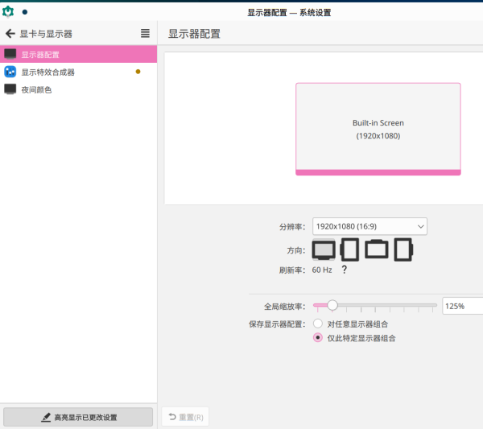
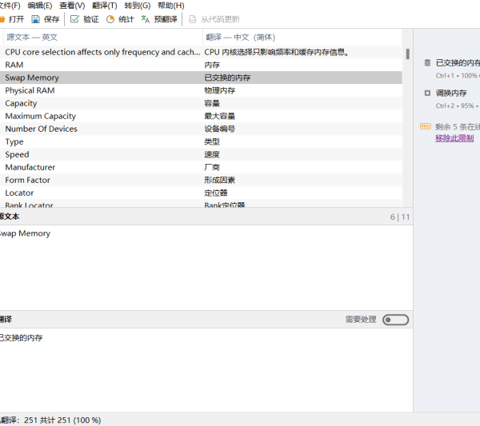
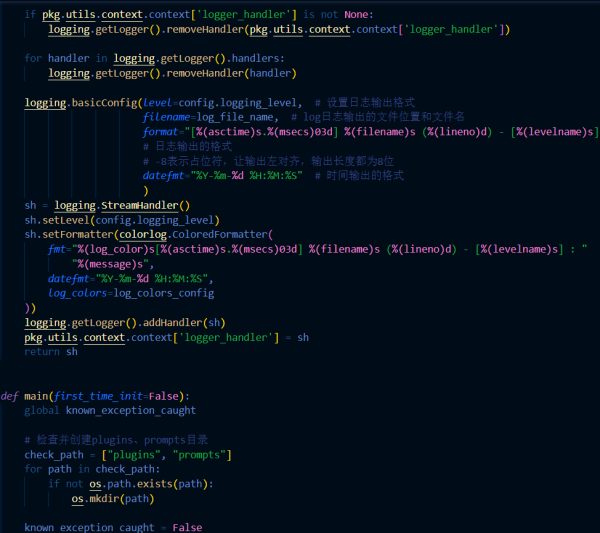

开源操作系统
基于GNU/Linux开发开源操作系统
开源项目本地化
翻译著名开源项目界面及文档
开源软件开发
开发社区自研软件
知识库文章撰写
编写开源软件操作说明等

OS
开源操作系统
Open source OS based on GNU/Linux
简约不失优美，实用美学主义，让桌面操控成为一种享受，为桌面用户提供商业操作系统之外的选择。
提高品质，保持和上游开源社区紧密合作；杜绝分裂主义，为开源社区发展做出应有贡献。

翻译
开源项目本地化
Translate technical documents from abroad
软件本地化，与开源方案提供的各种优势相结合，改善了用户体验，并最终导致相关方案的推广普及。
用户也相信，如果他们能用自己的语言理解这些项目，他们会更有效地使用它。

开发
软件和知识库
Make our modest for open source software
开源项目不仅仅是单个个体的贡献，更是一个团队共同发展的过程。在开源项目中，可以和其他开发者合作，共同开发和推广项目，从而提高整个开源社区的水平和影响力。
编写知识库文档,可以提供开发者和其他使用者所需的指导和信息，从而使开发更加顺利和高效。
$ cat /etc/wenyin/info
社区名称: 玟茵开源社区
成立年份: 2013
核心项目: WenYinOS
技术栈: GNU/Linux
社区理念: 开放 · 包容 · 细致 · 坚守
成立年份: 2013
核心项目: WenYinOS
技术栈: GNU/Linux
社区理念: 开放 · 包容 · 细致 · 坚守
$ _
Open Source Project
UNIX很简单，但需要有一定天赋的人才能理解这种简单。
如果debugging是一种消灭bug的过程，那编程就一定是把bug放进去的过程。
程序员和上帝打赌要开发出更大更好——傻瓜都会用的软件。而上帝却总能创造出更大更傻的傻瓜。所以，上帝总能赢。